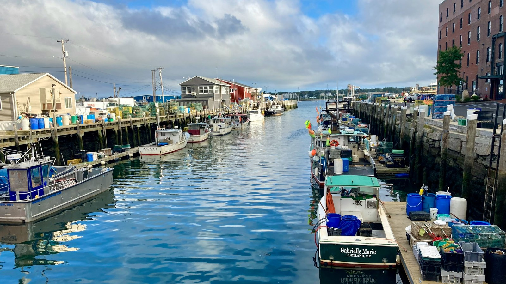

City Comparison
Burlington or Portland for retirement?
Two northern New England small cities where the winter is the entry fee and neither one is the cheap option. The house costs less in Burlington and more to hold onto. Here is the honest tradeoff.
Choose Burlington if the mountains, the lake and a quieter, safer city are what decide this, and Portland if you want to walk to dinner, fly somewhere without a connection, and eat in one of the better small food cities in the country. The catch they share: a hard winter, a tax bill neither state makes easy, and a typical home over $500,000 in both.
Side by side, scored.
The shaded, checkmarked cell on each row is the stronger one. Ties and single-point gaps are left unmarked.
| Metric | Burlington VERMONT | Portland MAINE |
|---|---|---|
| Cost & money | ||
| Typical home value | $520,000 | $571,000 |
| Estimated retiree budget | $6,000–$7,500/mo | $5,900–$7,300/mo |
| Budget tier (1 = least expensive) | 3 of 5 | 3 of 5 |
| Property tax rate | 1.51% | 0.98% ✓ |
| Home insurance estimate | $1,063/yr ✓ | $1,335/yr |
| Our 10-dimension scores | ||
| D1 Airport access | 6/10 | 8/10 ✓ |
| D2 Budget | 5/10 | 5/10 |
| D3 Healthcare | 8/10 | 9/10 |
| D4 Climate resilience & insurance | 7/10 | 8/10 |
| D5 Tax friendliness | 3/10 | 4/10 |
| D6 Walkability | 7/10 | 9/10 ✓ |
| D7 Outdoor recreation | 9/10 ✓ | 7/10 |
| D8 Active wellness | 7/10 | 6/10 |
| D9 Safety | 7/10 ✓ | 4/10 |
| D10 Community & culture | 8/10 | 9/10 |
| Climate | ||
| Winters | Long and cold, inland | Long and cold, damp and windy |
| January mean temperature | 19F | 23F |
| Annual snowfall | 70 in | 62 in |
| Annual sunshine | 49% of the year | 57% of the year |
| Summer heat severity (10 = worst) | 4/10, short and mild | 3/10, moderated by the ocean |
Scored 0–10 across every city on RetireMeHere; higher is better (except where noted). Checkmarks mark the stronger city in each row; ties and near-ties are left unmarked. Data: RetireMeHere city database, August 2026.
What they share: water, arts, and a winter you have to want
These two land in the same place on the money. Both sit in budget tier 3, both score 5 of 10 on affordability, and both carry a typical home above $500,000. Both are small cities built on water, Burlington on Lake Champlain and Portland on Casco Bay, and both run on an arts-and-food culture far larger than their populations would suggest. And both ask the same thing up front: a long, real winter, and a state that taxes retirement income. Neither of these is a warm-weather answer or a bargain, and if either of those is the priority, this is the wrong pairing to be choosing between.
Money: the cheaper house is the more expensive house
A typical Burlington home runs $520,000 against Portland's $571,000, so Burlington looks like the value buy by about $51,000. Then the carrying cost inverts it. Vermont's property tax rate is 1.51% against Maine's 0.98%, which on those two homes is roughly $7,852 a year in Burlington and $5,596 in Portland. That is about $2,256 a year more tax on the cheaper house. Insurance runs the other way and softens it, roughly $1,063 a year against $1,335, a $272 advantage to Burlington. Net, Burlington carries about $1,984 a year higher, or around $165 a month.
One thing not to double-count, because the arithmetic invites it: property tax and insurance are both already inside the monthly retiree estimates of $6,000 to $7,500 and $5,900 to $7,300. The $165 a month is not a saving on top of that monthly gap, it is most of the reason the monthly gap exists. Read the two figures as one story, not two.
The biggest practical difference: whether you need a car, and how easily you leave
This is where Portland takes the two marks that compound. Walkability scores 9 of 10 against Burlington's 7, and airport access scores 8 of 10 against Burlington's 6. On the Portland peninsula, the Old Port and the West End put groceries, restaurants, the waterfront and Maine Medical Center inside a walk, which makes a car genuinely optional rather than theoretically optional. Burlington's Church Street Marketplace is a real walkable core, but it is a few blocks deep, and most of daily life in Chittenden County happens by car.
The airports compound it because the same trip is easier from one end. Portland International Jetport publishes about thirty nonstop destinations across seven airlines, all domestic, including nonstop service to every one of United's domestic hubs. Patrick Leahy Burlington International publishes fewer than twenty across five airlines. From Burlington, most of the country is a connection through Newark, Philadelphia or Chicago. If you plan to visit grandchildren four times a year, that difference shows up every single trip.
Each city's signature: Burlington's mountains and quiet, Portland's table and its walk
Burlington's outdoor recreation scores 9 of 10 to Portland's 7, and it is the least arguable claim on this page. The Green Mountains, Camel's Hump and Mount Mansfield, Stowe and Sugarbush, and the whole length of Lake Champlain are all inside an easy drive, with hiking, paddling, cycling and skiing all genuinely available rather than nominally available. Safety is the other one, and it is the widest gap here: 7 of 10 against 4.
That safety number deserves its context, because it is not what it looks like. Portland's problem is property crime, not violence. Its total crime rate runs roughly 30% above the national rate and more than double Maine's statewide rate, concentrated in a dense downtown that absorbs a large visitor population, while its violent crime rate of about 267 per 100,000 sits below the national average. This is a lock-your-car city, not a dangerous one. Burlington is simply quieter on both counts.
Portland's case is density of the good kind. Community and culture scores 9 of 10 to Burlington's 8, and healthcare 9 to Burlington's 8, which for a city of about 69,000 people is unusual on both counts. The food scene is the headline and it is not hype: the peninsula carries a restaurant density that pulls people up from Boston for the weekend. Maine Medical Center is the largest hospital in northern New England and a Level I trauma center, ranked first in Maine by US News and rated high performing in fourteen procedures and conditions.
The honest shared downside: the winter and the tax bill
Both cities sit in the bottom half on tax friendliness, Portland 4 of 10 and Burlington 3. Maine fully exempts Social Security regardless of income and offers a pension income deduction of up to $48,216 per person for tax year 2025, but reduces that deduction dollar for dollar by the Social Security you receive, and taxes the rest at rates reaching 7.15%. Vermont's Social Security exemption is income-tested and narrower, phasing out entirely above $80,000 of adjusted gross income for joint filers, with most other retirement income taxable and a top rate of 8.75%. Portland is the better of the two on tax, but neither is a tax haven, and a retiree drawing meaningfully on an IRA or 401(k) will feel it in both.
On winter, Portland is milder on every figure and it is still not mild. January averages 23F against Burlington's 19F, annual snowfall runs about 62 inches against 70, and Portland sees sunshine 57% of the year against Burlington's 49%. What the figures do not carry is texture: Portland's cold is damp and windy off the water, Burlington's is drier and more consistently frozen, and people who have lived in both tend to have strong opinions about which is worse. On healthcare there is a shared caution too. Both cities are effectively one-system towns, so a second opinion in either usually means a drive to Boston.
Read the full profile
Each city has its own detailed retirement profile with scores, neighborhoods, hospitals, and tradeoffs.
A lakefront college town scoring 9 of 10 for outdoor recreation, with the Green Mountains behind it, Vermont's top-ranked hospital, and a $520,000 typical home.
Read the Burlington profile →
A walkable working harbor scoring 9 of 10 for walkability and community, with northern New England's largest hospital and thirty nonstop destinations from the Jetport.
Read the Portland profile →Frequently asked
Is Burlington or Portland ME better for retirement?
It splits evenly. Burlington is the stronger pick on outdoor access and safety, scoring 9 of 10 for outdoor recreation against Portland's 7 and 7 of 10 for safety against Portland's 4. Portland is stronger on getting around and getting out, scoring 9 of 10 for walkability against Burlington's 7 and 8 of 10 for airport access against Burlington's 6. Both sit in budget tier 3 and both score 5 of 10 on affordability, so neither is the cheap option.
Which is cheaper, Burlington VT or Portland ME?
It depends on whether you mean buying or holding. A typical Burlington home runs $520,000 against Portland's $571,000, so the house is cheaper in Burlington. But Vermont's property tax rate of 1.51% against Maine's 0.98% means the annual tax bill on those homes is roughly $7,852 in Burlington and $5,596 in Portland, so the cheaper house costs about $2,256 a year more to hold. Home insurance runs the other way, about $1,063 a year in Burlington against $1,335 in Portland. Net, Burlington carries about $1,984 a year higher, and that is already reflected in the monthly retiree estimates of $6,000 to $7,500 against $5,900 to $7,300.
Which has better healthcare, Burlington or Portland ME?
Both are strong for cities this size, and the scores are close: Portland 9 of 10, Burlington 8. Each is anchored by the top-ranked hospital in its state and a Level I trauma center. Maine Medical Center in Portland is the largest hospital in northern New England and was rated high performing in 14 procedures and conditions. The University of Vermont Medical Center in Burlington was rated high performing in 13, plus one adult specialty. The practical caution is the same in both: each city is effectively a one-system town, so a second opinion often means a drive.
Which is safer, Burlington or Portland ME?
Burlington, and it is the widest gap on this comparison: safety scores 7 of 10 against Portland's 4. The gap is mostly about property crime rather than violence. Portland's total crime rate runs roughly 30% above the national rate and more than double Maine's statewide rate, driven by theft in a dense, heavily visited downtown, while its violent crime rate of about 267 per 100,000 sits below the national average. Maine and Vermont are both among the safest states in the country.
Which has worse winters, Burlington or Portland ME?
Burlington, on every figure. January averages 19F in Burlington against 23F in Portland, annual snowfall runs about 70 inches against 62, and Burlington sees sunshine 49% of the year against Portland's 57%. Portland's winter is damper and windier off the water, but it is milder and brighter. Neither city is a mild-winter answer, and winter is the entry fee for both.
More city matchups
Want a personalized match?